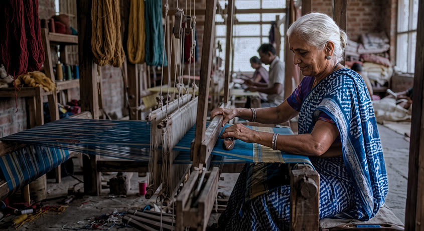
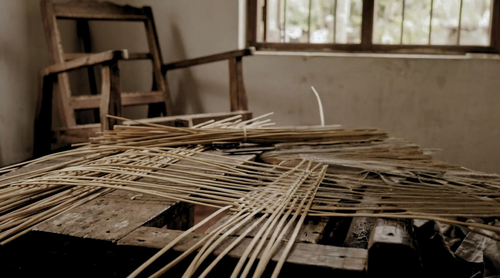
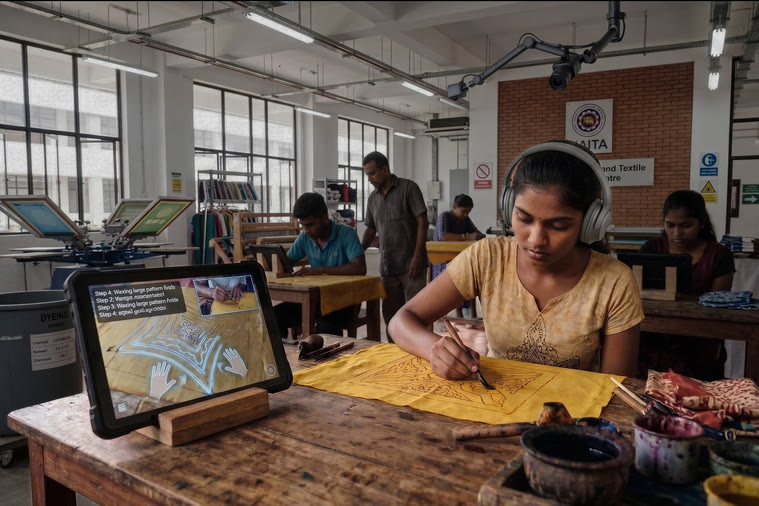
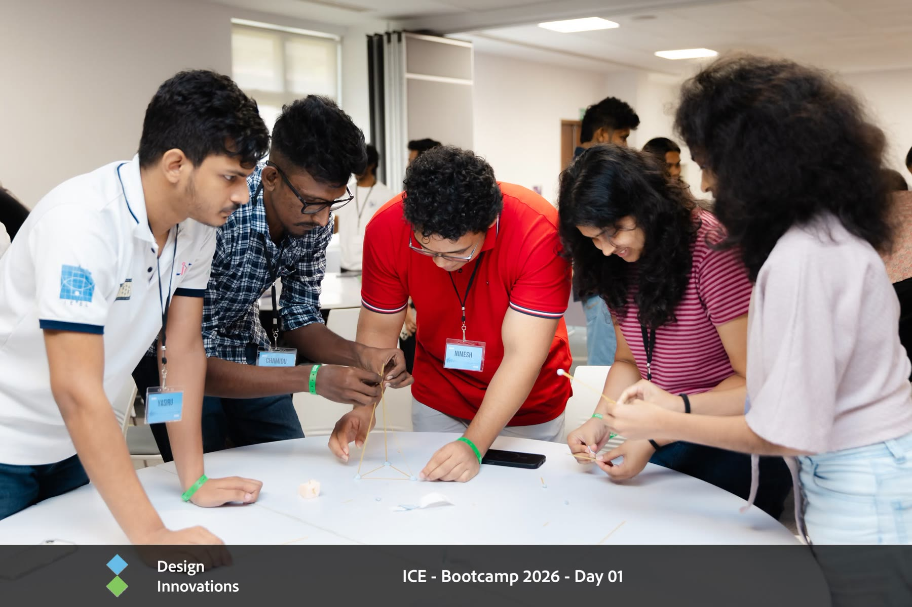
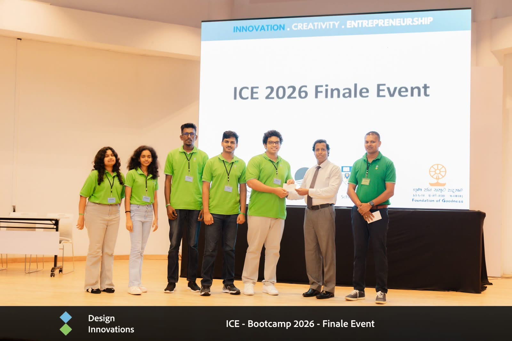

The Story of HANDOver
ICE Bootcamp 2026 · Team E
HANDOVER
Bringing generations of Sri Lankan craftsmanship into the future — captured through smart glasses, preserved as living knowledge, and handed to the next generation with real‑time AI coaching.
<2%
of master artisans have an active successor in training
— National Craft Council
— National Craft Council
26+
distinct traditional crafts practiced across Sri Lanka
57
craft centres nationwide that could adopt this training model
~540
full-time apprentices trained every year

Why HANDOver
Tacit knowledge doesn't survive on its own.
A master craftsman doesn't just know what to do — decades of practice live in the tiny, wordless decisions made with the eyes and hands: how hard to press, when to pause, how a texture should feel before moving on. That knowledge has always required years of standing beside a master to absorb.
When there's no apprentice in the room, it disappears with them. Sri Lanka's traditional crafts — mask carving, batik, handloom weaving, cane and reed work, pottery — are losing their masters faster than they're gaining successors.
The Framework
Harvest. Analyze. Hand over.
HANDOver turns a craftsman's know-how into a durable, teachable asset — using Meta Aria Gen 2 smart glasses to see the craft the way the artisan sees it.
Harvest
The artisan wears Aria Gen 2 glasses while working and narrating each move — capturing POV video, eye gaze, hand tracking, and audio explanation simultaneously.
Analyze
Video, gaze, hand pose and audio are fused into a structured, step-by-step knowledge base — the subtle nuances of the craft, captured and made explicit for the first time.
Hand over
The playbook is delivered to vocational institutions like NAITA, where apprentices learn with real-time, camera-driven feedback — no master required in the room.
How it Works
One capture. Many apprentices.

01 · CaptureThe master works, wearing the glasses
A skilled craftsman performs the craft as usual — while wearing Meta Aria Gen 2 glasses. He's asked to narrate what he's doing as he does it. The glasses quietly record:
- Point-of-view RGB video of every motion
- Eye gaze — where attention lands at each step
- Hand and finger tracking, movement by movement
- Spoken narration explaining the "why," not just the "what"
This raw, multi-modal capture becomes the seed of a structured knowledge base for that craft — built once, reusable forever.

02 · TrainThe apprentice learns, with AI watching
At a training institution, a camera is mounted above the trainee's workspace, with a tablet showing step-by-step instructions drawn from the knowledge base.
As the trainee attempts each step, the overhead camera observes their hand movements and compares them to the reference. Before they're allowed to move to the next step, the system checks their work — and if something's off, it explains what to fix, right there, in the moment.
Feedback-driven, real-time learning — so one master can effectively train many apprentices, without being physically present for each one.
Working Prototype
We built this end-to-end — with origami.
To prove the full loop, we recorded a person skilled in origami using Aria glasses, extracted a step-by-step tutorial from the capture, then had a novice follow it. A webcam watched them attempt each step; an AI agent checked their work before letting them continue — and corrected them when they got something wrong.
Live prototype — step-by-step origami tutorial with real-time AI feedback
Demo Day
Our ICE 2026 poster
Presented at the ICE Bootcamp 2026 finale — click to view full size.
Impact
Craft doesn't have to disappear when its master retires.
Preserve
Every capture becomes a permanent, structured record of technique — safeguarding heritage crafts against the day a master is no longer there to teach.
Scale
One recording session can train an unlimited number of apprentices, at institutions like NAITA, without the artisan needing to be in the room for each one.
Empower
Real-time, judgment-free feedback lets learners fail safely and correct course immediately — building genuine skill, not just imitation.
Team E
Built at ICE Bootcamp 2026
HANDOver was designed and prototyped over the ICE Bootcamp 2026, hosted by Design Innovations at the Foundation of Goodness, under the guidance of Prof. Suranga Nanayakkara.

